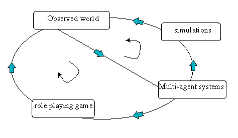

|
Use of Models as Role-Playing Games
Some models developed with Cormas or MAS are used as role-playing games. The conversion of the model into the game is made possible by a certain analogy: the agents of the model correspond to the actors of the game, the rules of the model are similar to the roles of the game and the simulation run correspond to the game session. Works on this subject have in common to propose a passage in both directions between the model and the game. Model and game are complementary and grow richer mutually. When the actors involved in the management of a space or a resource play, they bring modifications to the model. The approach for building models include generally a diagnosis, a formalization and a validation. Then, the models are used as multi-agent system or as role-playing game, for training or for negotiating. After a first use, the models are modified according to the behavior of the real actors during the game.  Use of role-playing-game: the approach
Models involved in role-playing games are the following: [AtollGame] : A role playing game to provide information about the complexity of interactions at stake dealing with groundwater management in a small but nonetheless overcrowded atoll in Micronesia (A. Dray, P. Perez, P. dAquino). [ButorStar] : A role playing game for
collective awareness of reedbed wise use (R.
Mathevet , C. Le Page, M. Etienne, G. Lefebvre, S.
Proréol, B. Poulin, G. Gigot, A. Mauchamp). [ContaMiCuenca]
: Game for water management in Guanacaste, Costa Rica (Spanish
version. Grégoire
Leclerc and Pierre
Bommel). [MaeSalaep] : A role playing game about the interactions between crops diversification and risk of erosion in a small watershed of nothern Thailand (G. Trébuil, B. Shinawatra-Ekasingh, F. Bousquet, C. Thong-Ngam). [MejanJeu] : A role-game about pine encroachment of natural ecosystems in Lozere, South of France (M. Etienne, C. Le Page). [MineSet] : Interactive simulation for sustainable forest management in the Congo Basin (Anton Bommel, Claude Garcia and Anne Dray). [Njoobari] : Organization and coordination within irrigation systems in Senegal (O. Barreteau, F. Bousquet et W. Daré). [Pat] : A role playing game to let local people from Bac Kan province (northern Vietnam) discuss about access rules to a renewable resource being more and more intensively used (S. Boissau, F. Sempé). [ReHab] : Re(sources)Hab(itat), computer-assisted role-playing game (Christophe Le Page). [Samba] : Land use in North VietNam (S. Boissau, J.-C. Castella). [SelfCormas] : Decentralized organization of land-use in Senegal (P. dAquino, A. Bah, F. Bousquet, C. Le Page). [Stratagenes] : In situ management of phytogenetic resources in Madagascar (S. Aubert, C. Le Page). [SugarRice] : A role-playing game to understand the expansion of sugarcane in rainfed lowland paddies of upper northeast Thailand (N. Suphanchaimart, F. Bousquet, I. Patamadit, C. Wongsamun, G. Trébuil). [Sylvopast] : A role-game, built with
Excel (© Microsoft), about sylvopastoral management and wildfire
prevention in Mediterranean forests (M.
Etienne)
|
|